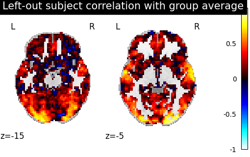
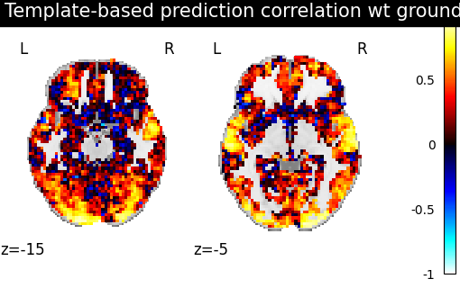

Note
Go to the end to download the full example code. or to run this example in your browser via Binder
Template-based prediction.¶
In this tutorial, we show how to better predict new contrasts for a target subject using many source subjects corresponding contrasts. For this purpose, we create a template to which we align the target subject, using shared information. We then predict new images for the target and compare them to a baseline.
We mostly rely on Python common packages and on nilearn to handle functional data in a clean fashion.
To run this example, you must launch IPython via ipython
--matplotlib in a terminal, or use jupyter-notebook.
Retrieve the data¶
In this example we use the IBC dataset, which includes a large number of different contrasts maps for 12 subjects. We download the images for subjects sub-01, sub-02, sub-04, sub-05, sub-06 and sub-07 (or retrieve them if they were already downloaded). imgs is the list of paths to available statistical images for each subjects. df is a dataframe with metadata about each of them. mask is a binary image used to extract grey matter regions.
[get_dataset_dir] Dataset found in /home/runner/nilearn_data/ibc
[fetch_single_file] Downloading data from https://osf.io/qn5b6/download ...
[_chunk_report_] Downloaded 5939200 of 21197218 bytes (28.0%%, 2.6s
remaining)
[fetch_single_file] ...done. (3 seconds, 0 min)
[uncompress_file] Extracting data from
/home/runner/nilearn_data/ibc/cd396fed594eb866baecd48b70ddf7e7/download...
[uncompress_file] .. done.
[fetch_single_file] Downloading data from https://osf.io/u74a3/download ...
[_chunk_report_] Downloaded 8396800 of 21185350 bytes (39.6%%, 1.5s
remaining)
[fetch_single_file] ...done. (3 seconds, 0 min)
[uncompress_file] Extracting data from
/home/runner/nilearn_data/ibc/fc5556cc3678df4f4ab566414382180a/download...
[uncompress_file] .. done.
[fetch_single_file] Downloading data from https://osf.io/83bje/download ...
[_chunk_report_] Downloaded 12632064 of 21188335 bytes (59.6%%, 0.7s
remaining)
[fetch_single_file] ...done. (3 seconds, 0 min)
[uncompress_file] Extracting data from
/home/runner/nilearn_data/ibc/1beaa1b5a1734a1afbf1c844e1f7a60e/download...
[uncompress_file] .. done.
[fetch_single_file] Downloading data from https://osf.io/43j69/download ...
[_chunk_report_] Downloaded 6381568 of 21187400 bytes (30.1%%, 2.3s
remaining)
[fetch_single_file] ...done. (4 seconds, 0 min)
[uncompress_file] Extracting data from
/home/runner/nilearn_data/ibc/75e62c44985852e000c2b2865badf72d/download...
[uncompress_file] .. done.
Definine a masker¶
- We define a nilearn masker that will be used to handle relevant data.
For more information, visit : ‘http://nilearn.github.io/manipulating_images/masker_objects.html’
from nilearn.maskers import NiftiMasker
masker = NiftiMasker(mask_img=mask_img).fit()
Prepare the data¶
For each subject, we will use two series of contrasts acquired during two independent sessions with a different phase encoding: Antero-posterior(AP) or Postero-anterior(PA).
# To infer a template for subjects sub-01 to sub-06 for both AP and PA data,
# we make a list of 4D niimgs from our list of list of files containing 3D images
from nilearn.image import concat_imgs
template_train = []
for i in range(5):
template_train.append(concat_imgs(imgs[i]))
target_train = df[df.subject == "sub-07"][df.acquisition == "ap"].path.values
# For subject sub-07, we split it in two folds:
# - target train: sub-07 AP contrasts, used to learn alignment to template
# - target test: sub-07 PA contrasts, used as a ground truth to score predictions
# We make a single 4D Niimg from our list of 3D filenames
target_train = concat_imgs(target_train)
target_test = df[df.subject == "sub-07"][df.acquisition == "pa"].path.values
/home/runner/work/fmralign/fmralign/examples/plot_template_alignment.py:67: UserWarning: Boolean Series key will be reindexed to match DataFrame index.
target_train = df[df.subject == "sub-07"][df.acquisition == "ap"].path.values
/home/runner/work/fmralign/fmralign/examples/plot_template_alignment.py:75: UserWarning: Boolean Series key will be reindexed to match DataFrame index.
target_test = df[df.subject == "sub-07"][df.acquisition == "pa"].path.values
Compute a baseline (average of subjects)¶
We create an image with as many contrasts as any subject representing for each contrast the average of all train subjects maps.
import numpy as np
masked_imgs = [masker.transform(img) for img in template_train]
average_img = np.mean(masked_imgs, axis=0)
average_subject = masker.inverse_transform(average_img)
Create a template from the training subjects.¶
- We define an estimator using the class TemplateAlignment:
We align the whole brain through ‘multiple’ local alignments.
These alignments are calculated on a parcellation of the brain in 150 pieces, this parcellation creates group of functionnally similar voxels.
The template is created iteratively, aligning all subjects data into a common space, from which the template is inferred and aligning again to this new template space.
from nilearn.image import index_img
from fmralign.template_alignment import TemplateAlignment
template_estim = TemplateAlignment(
n_pieces=150, alignment_method="ridge_cv", mask=masker
)
template_estim.fit(template_train)
/home/runner/work/fmralign/fmralign/examples/plot_template_alignment.py:109: UserWarning: Overriding provided-default estimator parameters with provided masker parameters :
Parameter detrend :
Masker parameter False - overriding estimator parameter None
template_estim.fit(template_train)
[TemplateAlignment.fit] Resampling mask
[TemplateAlignment.fit] Resampling mask
/home/runner/work/fmralign/fmralign/fmralign/_utils.py:251: UserWarning: Overriding provided-default estimator parameters with provided masker parameters :
Parameter mask_strategy :
Masker parameter background - overriding estimator parameter epi
Parameter smoothing_fwhm :
Masker parameter None - overriding estimator parameter 4.0
parcellation.fit(images_to_parcel)
[TemplateAlignment.fit] Resampling mask
/home/runner/work/fmralign/fmralign/fmralign/_utils.py:183: UserWarning:
Some parcels are more than 1000 voxels wide it can slow down alignment,especially optimal_transport :
parcel 8 : 1178 voxels
parcel 9 : 1095 voxels
parcel 16 : 1209 voxels
parcel 20 : 1084 voxels
parcel 23 : 1067 voxels
parcel 46 : 1164 voxels
parcel 47 : 1045 voxels
parcel 111 : 1182 voxels
parcel 113 : 1206 voxels
parcel 149 : 1229 voxels
warnings.warn(warning)
[TemplateAlignment.fit] Resampling mask
/home/runner/work/fmralign/fmralign/fmralign/_utils.py:251: UserWarning: Overriding provided-default estimator parameters with provided masker parameters :
Parameter mask_strategy :
Masker parameter background - overriding estimator parameter epi
Parameter smoothing_fwhm :
Masker parameter None - overriding estimator parameter 4.0
parcellation.fit(images_to_parcel)
[TemplateAlignment.fit] Resampling mask
/home/runner/work/fmralign/fmralign/fmralign/_utils.py:183: UserWarning:
Some parcels are more than 1000 voxels wide it can slow down alignment,especially optimal_transport :
parcel 15 : 1272 voxels
parcel 24 : 1098 voxels
parcel 28 : 1552 voxels
parcel 31 : 1307 voxels
parcel 45 : 1318 voxels
parcel 66 : 1336 voxels
parcel 82 : 1399 voxels
parcel 90 : 1232 voxels
parcel 92 : 1099 voxels
parcel 95 : 1369 voxels
parcel 100 : 1305 voxels
parcel 113 : 1431 voxels
parcel 114 : 1003 voxels
warnings.warn(warning)
[TemplateAlignment.fit] Resampling mask
/home/runner/work/fmralign/fmralign/fmralign/_utils.py:251: UserWarning: Overriding provided-default estimator parameters with provided masker parameters :
Parameter mask_strategy :
Masker parameter background - overriding estimator parameter epi
Parameter smoothing_fwhm :
Masker parameter None - overriding estimator parameter 4.0
parcellation.fit(images_to_parcel)
[TemplateAlignment.fit] Resampling mask
/home/runner/work/fmralign/fmralign/fmralign/_utils.py:183: UserWarning:
Some parcels are more than 1000 voxels wide it can slow down alignment,especially optimal_transport :
parcel 9 : 1268 voxels
parcel 24 : 1835 voxels
parcel 51 : 1141 voxels
parcel 57 : 1216 voxels
parcel 67 : 1884 voxels
parcel 70 : 1045 voxels
parcel 76 : 1421 voxels
parcel 85 : 1242 voxels
parcel 87 : 1362 voxels
parcel 95 : 1458 voxels
parcel 96 : 1352 voxels
parcel 118 : 1674 voxels
parcel 133 : 1661 voxels
parcel 141 : 1292 voxels
warnings.warn(warning)
[TemplateAlignment.fit] Resampling mask
/home/runner/work/fmralign/fmralign/fmralign/_utils.py:251: UserWarning: Overriding provided-default estimator parameters with provided masker parameters :
Parameter mask_strategy :
Masker parameter background - overriding estimator parameter epi
Parameter smoothing_fwhm :
Masker parameter None - overriding estimator parameter 4.0
parcellation.fit(images_to_parcel)
[TemplateAlignment.fit] Resampling mask
/home/runner/work/fmralign/fmralign/fmralign/_utils.py:183: UserWarning:
Some parcels are more than 1000 voxels wide it can slow down alignment,especially optimal_transport :
parcel 2 : 1161 voxels
parcel 9 : 1158 voxels
parcel 13 : 1264 voxels
parcel 36 : 1062 voxels
parcel 39 : 1231 voxels
parcel 79 : 1111 voxels
parcel 97 : 1051 voxels
parcel 123 : 1243 voxels
parcel 130 : 1388 voxels
parcel 138 : 1143 voxels
parcel 147 : 1218 voxels
warnings.warn(warning)
[TemplateAlignment.fit] Resampling mask
/home/runner/work/fmralign/fmralign/fmralign/_utils.py:251: UserWarning: Overriding provided-default estimator parameters with provided masker parameters :
Parameter mask_strategy :
Masker parameter background - overriding estimator parameter epi
Parameter smoothing_fwhm :
Masker parameter None - overriding estimator parameter 4.0
parcellation.fit(images_to_parcel)
[TemplateAlignment.fit] Resampling mask
/home/runner/work/fmralign/fmralign/fmralign/_utils.py:183: UserWarning:
Some parcels are more than 1000 voxels wide it can slow down alignment,especially optimal_transport :
parcel 2 : 1296 voxels
parcel 12 : 1001 voxels
parcel 28 : 1024 voxels
parcel 33 : 1119 voxels
parcel 59 : 1206 voxels
parcel 72 : 1098 voxels
parcel 87 : 1194 voxels
parcel 88 : 1038 voxels
parcel 96 : 1071 voxels
parcel 108 : 1097 voxels
parcel 147 : 1247 voxels
warnings.warn(warning)
[TemplateAlignment.fit] Resampling mask
/home/runner/work/fmralign/fmralign/fmralign/_utils.py:251: UserWarning: Overriding provided-default estimator parameters with provided masker parameters :
Parameter mask_strategy :
Masker parameter background - overriding estimator parameter epi
Parameter smoothing_fwhm :
Masker parameter None - overriding estimator parameter 4.0
parcellation.fit(images_to_parcel)
[TemplateAlignment.fit] Resampling mask
/home/runner/work/fmralign/fmralign/fmralign/_utils.py:183: UserWarning:
Some parcels are more than 1000 voxels wide it can slow down alignment,especially optimal_transport :
parcel 9 : 1198 voxels
parcel 17 : 1057 voxels
parcel 28 : 1161 voxels
parcel 32 : 1133 voxels
parcel 48 : 1080 voxels
parcel 61 : 1046 voxels
parcel 101 : 1021 voxels
parcel 107 : 1122 voxels
parcel 120 : 1315 voxels
parcel 134 : 1286 voxels
parcel 136 : 1089 voxels
warnings.warn(warning)
[TemplateAlignment.fit] Resampling mask
/home/runner/work/fmralign/fmralign/fmralign/_utils.py:251: UserWarning: Overriding provided-default estimator parameters with provided masker parameters :
Parameter mask_strategy :
Masker parameter background - overriding estimator parameter epi
Parameter smoothing_fwhm :
Masker parameter None - overriding estimator parameter 4.0
parcellation.fit(images_to_parcel)
[TemplateAlignment.fit] Resampling mask
/home/runner/work/fmralign/fmralign/fmralign/_utils.py:183: UserWarning:
Some parcels are more than 1000 voxels wide it can slow down alignment,especially optimal_transport :
parcel 44 : 1034 voxels
parcel 45 : 1001 voxels
parcel 77 : 1371 voxels
parcel 80 : 1110 voxels
parcel 83 : 1071 voxels
parcel 87 : 1495 voxels
parcel 91 : 1126 voxels
parcel 119 : 1066 voxels
parcel 131 : 1143 voxels
parcel 138 : 1233 voxels
parcel 142 : 1268 voxels
warnings.warn(warning)
[TemplateAlignment.fit] Resampling mask
/home/runner/work/fmralign/fmralign/fmralign/_utils.py:251: UserWarning: Overriding provided-default estimator parameters with provided masker parameters :
Parameter mask_strategy :
Masker parameter background - overriding estimator parameter epi
Parameter smoothing_fwhm :
Masker parameter None - overriding estimator parameter 4.0
parcellation.fit(images_to_parcel)
[TemplateAlignment.fit] Resampling mask
/home/runner/work/fmralign/fmralign/fmralign/_utils.py:183: UserWarning:
Some parcels are more than 1000 voxels wide it can slow down alignment,especially optimal_transport :
parcel 49 : 1018 voxels
parcel 74 : 1011 voxels
parcel 132 : 1119 voxels
warnings.warn(warning)
[TemplateAlignment.fit] Resampling mask
/home/runner/work/fmralign/fmralign/fmralign/_utils.py:251: UserWarning: Overriding provided-default estimator parameters with provided masker parameters :
Parameter mask_strategy :
Masker parameter background - overriding estimator parameter epi
Parameter smoothing_fwhm :
Masker parameter None - overriding estimator parameter 4.0
parcellation.fit(images_to_parcel)
[TemplateAlignment.fit] Resampling mask
/home/runner/work/fmralign/fmralign/fmralign/_utils.py:183: UserWarning:
Some parcels are more than 1000 voxels wide it can slow down alignment,especially optimal_transport :
parcel 2 : 1454 voxels
parcel 17 : 1247 voxels
parcel 26 : 1361 voxels
parcel 39 : 1017 voxels
parcel 40 : 1541 voxels
parcel 65 : 1148 voxels
parcel 68 : 1312 voxels
parcel 79 : 1274 voxels
parcel 93 : 1521 voxels
parcel 102 : 1371 voxels
parcel 136 : 1553 voxels
parcel 149 : 1039 voxels
warnings.warn(warning)
[TemplateAlignment.fit] Resampling mask
/home/runner/work/fmralign/fmralign/fmralign/_utils.py:251: UserWarning: Overriding provided-default estimator parameters with provided masker parameters :
Parameter mask_strategy :
Masker parameter background - overriding estimator parameter epi
Parameter smoothing_fwhm :
Masker parameter None - overriding estimator parameter 4.0
parcellation.fit(images_to_parcel)
[TemplateAlignment.fit] Resampling mask
/home/runner/work/fmralign/fmralign/fmralign/_utils.py:183: UserWarning:
Some parcels are more than 1000 voxels wide it can slow down alignment,especially optimal_transport :
parcel 4 : 1223 voxels
parcel 8 : 1439 voxels
parcel 9 : 1031 voxels
parcel 11 : 1316 voxels
parcel 16 : 1173 voxels
parcel 18 : 1270 voxels
parcel 37 : 1616 voxels
parcel 53 : 1212 voxels
parcel 101 : 1042 voxels
parcel 128 : 1180 voxels
parcel 132 : 1021 voxels
parcel 141 : 1437 voxels
warnings.warn(warning)
Predict new data for left-out subject¶
We use target_train data to fit the transform, indicating it corresponds to the contrasts indexed by train_index and predict from this learnt alignment contrasts corresponding to template test_index numbers. For each train subject and for the template, the AP contrasts are sorted from 0, to 53, and then the PA contrasts from 53 to 106.
train_index = range(53)
test_index = range(53, 106)
# We input the mapping image target_train in a list, we could have input more
# than one subject for which we'd want to predict : [train_1, train_2 ...]
prediction_from_template = template_estim.transform(
[target_train], train_index, test_index
)
# As a baseline prediction, let's just take the average of activations across subjects.
prediction_from_average = index_img(average_subject, test_index)
[TemplateAlignment.wrapped] Resampling mask
/home/runner/work/fmralign/fmralign/fmralign/_utils.py:251: UserWarning: Overriding provided-default estimator parameters with provided masker parameters :
Parameter mask_strategy :
Masker parameter background - overriding estimator parameter epi
Parameter smoothing_fwhm :
Masker parameter None - overriding estimator parameter 4.0
parcellation.fit(images_to_parcel)
[TemplateAlignment.wrapped] Resampling mask
Score the baseline and the prediction¶
We use a utility scoring function to measure the voxelwise correlation between the prediction and the ground truth. That is, for each voxel, we measure the correlation between its profile of activation without and with alignment, to see if alignment was able to predict a signal more alike the ground truth.
from fmralign.metrics import score_voxelwise
# Now we use this scoring function to compare the correlation of predictions
# made from group average and from template with the real PA contrasts of sub-07
average_score = masker.inverse_transform(
score_voxelwise(target_test, prediction_from_average, masker, loss="corr")
)
template_score = masker.inverse_transform(
score_voxelwise(
target_test, prediction_from_template[0], masker, loss="corr"
)
)
Plotting the measures¶
Finally we plot both scores
from nilearn import plotting
baseline_display = plotting.plot_stat_map(
average_score, display_mode="z", vmax=1, cut_coords=[-15, -5]
)
baseline_display.title("Group average correlation wt ground truth")
display = plotting.plot_stat_map(
template_score, display_mode="z", cut_coords=[-15, -5], vmax=1
)
display.title("Template-based prediction correlation wt ground truth")
- 
- 
We observe that creating a template and aligning a new subject to it yields a prediction that is better correlated with the ground truth than just using the average activations of subjects.
Total running time of the script: (18 minutes 23.069 seconds)